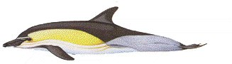

The common dolphin has a predominantly warm temperate distribution in the North Atlantic, so that in the British Isles, it is seen most frequently off-shore from Southwest Britain. Nevertheless, particularly when there is a strong flow of the relatively warm Gulf Stream, the species may be seen in north Scottish waters. Such conditions appear to have been prevailing during the 1980's, so that of the six documented strandings of this species in Shetland this century, four of these have been during that period (May 1985, December 1985, August 1986, and May 1989). The other two strandings were in February 1936 and June 1966, Other than these, a common dolphin was captured at Urafirth in 1985. Since the UK Mammal Society's sighting scheme was initiated in 1973, there have been several sightings of common dolphins in Shetland waters, mainly between June and September.
